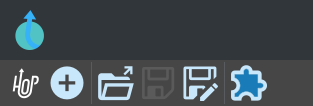
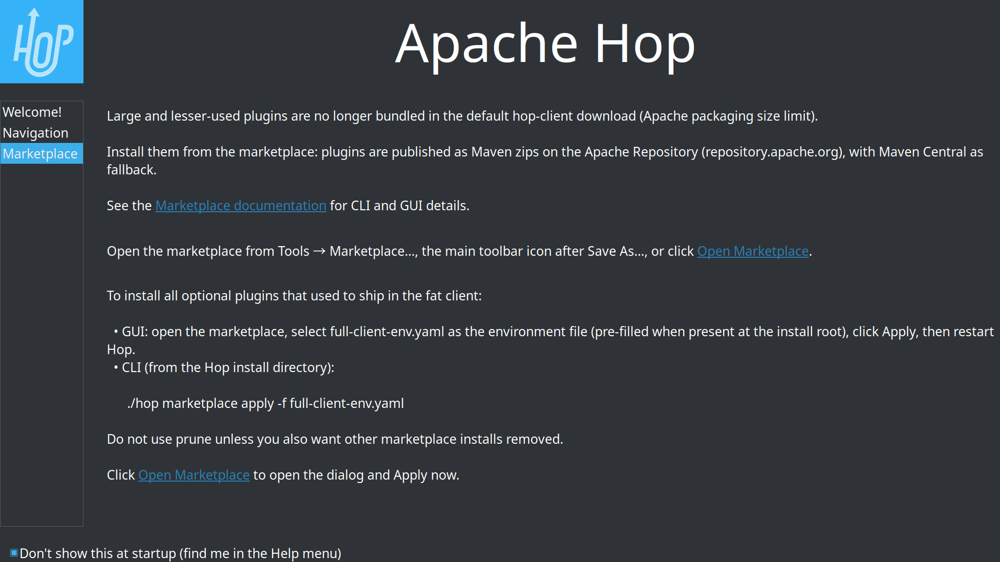
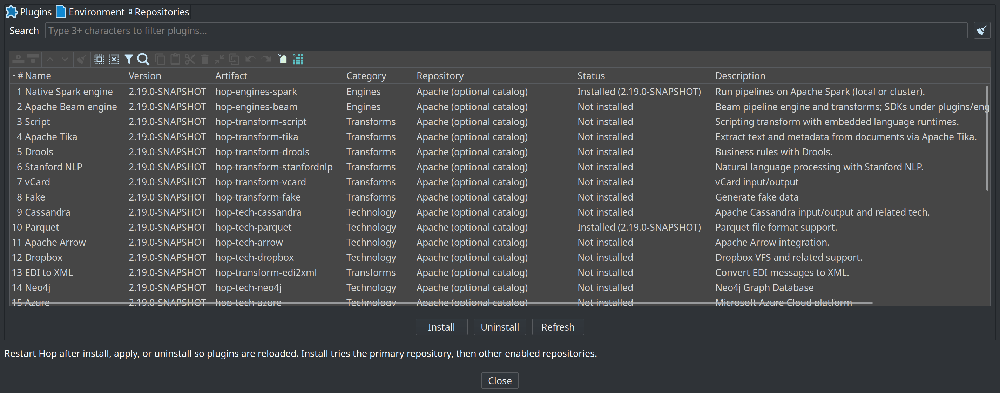
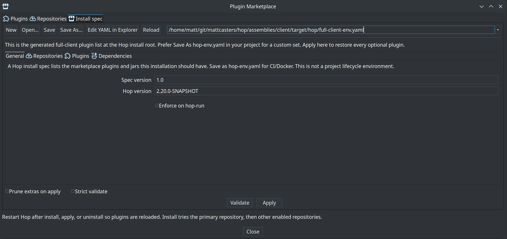
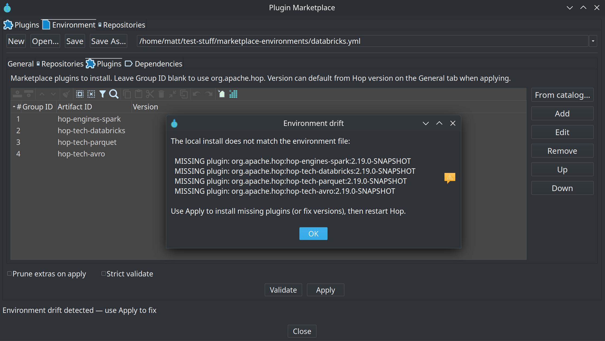
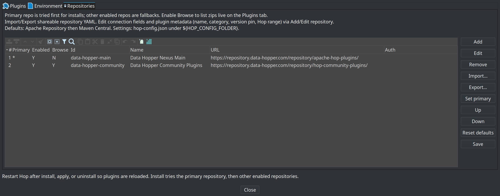
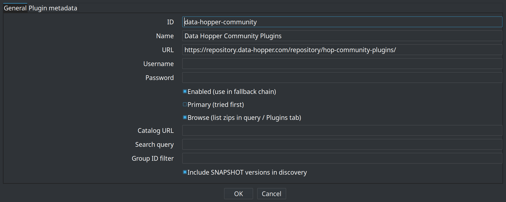
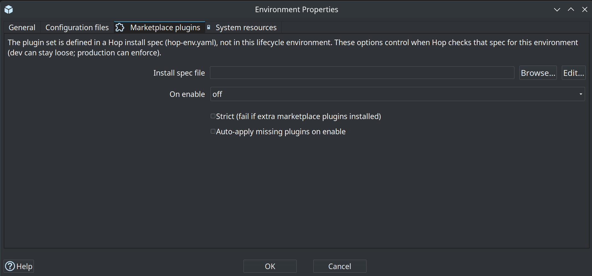

Hop Marketplace
Some Hop plugins are optional: they are not bundled in the default client zip so the download sizes stay within reason. The marketplace installs those plugins into the running Hop client’s plugins/ tree from a Maven repository.
Restore the full plugin set
The default hop-client zip is intentionally smaller: we made large plugins optional since version 2.19.0. To install all marketplace-optional plugins that used to ship in the download (before version 2.19), use the generated install spec at the installation root:
cd /path/to/hop
./hop marketplace apply -f full-client-env.yaml
# Please restart Hop server or GUI instances that might still be openNotes:
-
Requires network access to Apache Repository / Maven Central (or a mirror configured in hop-config).
-
For SNAPSHOT builds when developing you can point the marketplace at a local Nexus that has the plugin zip files published. See folder
docker/marketplace-nexusin the source code to run your own Nexus locally. -
The download is large (hundreds of MB); that is expected.
-
Do NOT pass
--pruneunless you also want other marketplace installs removed. -
full-client-env.yamlis generated at build time from marketplace plugin source fileoptional-plugins.yaml(source of truth).
Beam SDKs/runners install with the Beam marketplace plugin into top-level lib/core (and Spark client jars into lib/spark-client). The older plugins/engines/beam/lib-beam layout is no longer produced. Developers who want Beam baked into a local hop-client build can use Maven profile -Pbeam (for example ./mvnw -pl assemblies/client -am package -Pbeam).
Defaults
Without extra configuration, Hop uses:
-
asf (primary) —
https://repository.apache.org/content/groups/public/ -
central (fallback) —
https://repo1.maven.org/maven2/
Install tries the primary repository first, then other enabled repositories, until the plugin zip is found.
Settings are stored under the marketplace key in
${HOP_CONFIG_FOLDER}/hop-config.json
config/hop-config.json in your client distribution is only provided to get started but will be not survive a Hop version upgrade. Configure your own configuration.
|
CLI overview
From the Hop install directory:
./hop marketplace install hop-tech-parquet
./hop marketplace install hop-engines-spark:2.19.0
./hop marketplace install hop-engines-spark:2.19.0 --repo asf
./hop marketplace install hop-tech-parquet hop-transform-tika datavault
./hop marketplace list
./hop marketplace query parquet
./hop marketplace query "spark engine"
./hop marketplace uninstall hop-tech-parquet
# Repositories
./hop marketplace repo list
./hop marketplace repo add --id corporate --url https://nexus.example.com/repository/hop/ --primary
./hop marketplace repo set-primary asf
./hop marketplace repo reset-defaults
# Declarative environment (CI / Docker)
./hop marketplace apply -f hop-env.yaml
./hop marketplace apply -f hop-env.yaml --prune
./hop marketplace validate -f hop-env.yaml
./hop marketplace validate -f hop-env.yaml --strictAfter install, apply, or uninstall, restart Hop so the plugin registry reloads.
Coordinates for install: artifactId, artifactId:version, or groupId:artifactId:version.
Optional --repo <id> forces a single repository (skips the fallback chain).
install accepts several coordinates in one command. All of them are resolved before the first
download, so an unknown or ambiguous name fails before anything is fetched. Downloads then run one
after another with a [2/5] progress line per plugin; a plugin that fails to install does not stop
the others, and the command exits non-zero when any of them failed.
query searches the local optional-plugin catalog (not Maven Central). The filter is a
case-insensitive substring matched against artifact id, name, category, description, and install
path. Omit the filter (or pass an empty string) to list every optional plugin. Matches may show
[installed] when the plugin folder is present under the Hop install.
GUI
The marketplace GUI is the primary way to install optional plugins, manage Maven repositories, and edit declarative environment files without using the CLI.
Opening the marketplace
You can open the marketplace dialog from:
-
Tools → Marketplace…
-
The Hop Gui toolbar marketplace icon

On first use you may also see the welcome page that introduces the marketplace:

The main Plugin Marketplace dialog has three tabs:
-
Plugins — browse, search, install, and uninstall optional plugins
-
Install spec — edit a Hop install spec (
hop-env.yaml/ JSON) and validate or apply it -
Repositories — configure Maven repositories (same settings as the CLI / hop-config)
After install, apply, or uninstall, restart Hop so the plugin registry reloads.
Plugins tab

Use this tab to work with the local optional-plugin catalog:
-
Search — type three or more characters to filter by name, artifact id, category, description, or install path. Clear the filter with the clear button.
-
Table columns: Name, Artifact, Category, Status, Description.
-
Status values:
-
Installed — present on disk with a marketplace install receipt (version shown when known)
-
Present on disk — plugin folder exists but no marketplace receipt
-
Not installed — not found under
plugins/
-
-
Install / Uninstall / Refresh — act on the selected plugins (uninstall requires a marketplace receipt)
-
Several plugins can be selected at once with ctrl-click, shift-click, or ctrl-A, and installed or uninstalled in one go. Installs run one after another behind a single progress dialog; a plugin that fails does not stop the others and every failure is reported together at the end.
-
On Hop Web with authentication enabled, Install, Uninstall, repository editing, and hop-env Apply require the administrator permission
plugin.manage(built-in Admin role). Catalog browse, Refresh, and Validate remain available to other roles. See the Hop Web authorization section for details.
Install uses the primary repository first, then other enabled repositories (see Repositories tab).
Install spec tab

This tab is the editor for a Hop install spec: a YAML/JSON file that declares which marketplace plugins and jars this Hop installation should have. It is not a project lifecycle environment (dev/test/production).
It is the GUI equivalent of hop marketplace validate / apply. Double-click hop-env.yaml in the Explorer perspective to open the same form editor. Edit YAML in Explorer opens the file as plain YAML for hand edits; Reload reads it back after you save there.
Happy path:
-
New
-
Add plugins (From catalog…)
-
Save As…
${PROJECT_HOME}/hop-env.yaml(default folder is the active project home) -
Validate, then Apply, then restart Hop
full-client-env.yaml at the install root is a generated list of every optional plugin. A banner says so; use Apply to restore the fat client, or Save As into a project for a custom set.
File toolbar
-
New — empty install spec
-
Open… — open a
hop-env.yaml/.yml/.jsonfile (Hop VFS, project variables allowed) -
Save / Save As… — write YAML or JSON (by extension)
-
Edit YAML in Explorer — open the current file in the Explorer perspective as YAML
-
Reload — re-read the file from disk
-
Filename combo — current path plus recently used install spec files (remembered via the Hop audit list for this namespace). Selecting an entry loads that file; a path that does not exist yet is kept so Save can create it.
-
On open, Hop prefers the last file you edited in this dialog; otherwise it may pre-select
full-client-env.yamlat the install root when that file exists.
Nested editor tabs
| Tab | Contents |
|---|---|
General |
Spec |
Repositories |
Ordered list of Maven repositories for this environment file (first row is primary). Optional username/password. Import from hop-config… copies enabled repositories from hop-config (one-shot; env-file repos stay independent of the main Repositories tab). |
Plugins |
Plugin GAVs to install. From catalog… multi-selects from the optional-plugin catalog. Leave Group ID blank to use |
Dependencies |
Optional jars (for example JDBC) with target directory under Hop home (default |
Validate and Apply
At the bottom of the Install spec tab:
-
Validate — compare the local install to the saved environment file without downloading.
-
Apply — install missing plugins and dependencies declared in the file.
-
Prune extras on apply — same as CLI
apply --prune(confirm before running). -
Strict validate — also fail when extra marketplace-installed plugins (receipts under
plugins/.marketplace/) are not listed in the file.
If validation finds drift, Hop shows a report. Use Apply to fix, then restart Hop.

Repositories tab

Configure the global marketplace repository list (stored under marketplace in ${HOP_CONFIG_FOLDER}/hop-config.json — the same config the CLI uses):
-
Table columns: Primary, Enabled, Id, Name, URL, Auth
-
Add / Edit / Remove — maintain repository entries
-
Set primary — install tries this repository first
-
Up / Down — order fallbacks after the primary
-
Reset defaults — Apache Repository (primary) + Maven Central
-
Import… / Export… — read or write a shareable
hop-marketplace-repo.yamldefinition on disk -
Import from URL… — download a definition published at an https address (see Import from URL)
-
Save — write hop-config (required to keep Add / Edit / Remove changes; the two import buttons save on their own)
Add or edit a repository with id, name, URL, optional credentials, and primary/enabled flags:

Import from URL
Import from URL… adds a repository from a definition published on the web, so a marketplace operator can hand out one link instead of a file and a set of instructions.
Because the address is typically pasted from an email, a chat message or a web page, the import is deliberately narrow:
-
https only. The definition names the hosts that plugin code is later downloaded from, so it must not be modifiable in transit. For a host without TLS, download the file and import it from disk.
-
The download is anonymous. No credentials are sent, so an address that turns out to be hostile cannot collect the
HOP_MARKETPLACE_*credentials that apply to every repository. This means the definition itself has to be publicly readable; the artifacts it points at do not. -
Credentials in the file are ignored. A definition fetched over the network describes where a repository is, never who connects to it. Add the username and password on the repository entry afterwards, or set
HOP_MARKETPLACE_<ID>_USERNAME/_PASSWORD. -
Nothing is added until you confirm. Hop shows the id, name, URL, download template, catalog URL and plugin count first. Adding a repository means trusting it as a source of code, so check that the addresses are ones you expect.
One field is not merely descriptive: a definition that sets primary: true becomes the primary repository on import and demotes the current one, so every install tries it first. If that repository is private and the credentials are not set yet, installs that used to work will fail until they are. Check that field before importing a definition you did not write, and use Set primary to put the order back.
Importing the same file from disk keeps any credentials it contains. That is what makes an administrator-provisioned definition work for an internal rollout: the file was placed there deliberately, where a URL is only ever a pointer.
Projects lifecycle environments
When the Projects plugin is installed, each lifecycle environment can store marketplace-specific attributes (namespaced under the marketplace group). On the environment properties dialog, open the Marketplace plugins tab:

Typical options:
-
Install spec file — path to a
hop-env.yaml(variables allowed, for example under the project home). This is a Hop install spec, not a lifecycle environment config file. -
On enable —
off(no check),warn(log or dialog on drift), orenforce(fail enabling the environment if the install does not match) -
Strict — treat extra marketplace plugins as drift
-
Auto-apply missing plugins on enable — optional; off by default (use only on controlled machines)
If On enable is unset, purpose-based defaults apply: Production → enforce, Testing / Acceptance → warn, Development / CI-style purposes → off.
This complements hop-env enforceOnRun (checked at hop-run) and the Install spec tab Validate / Apply actions (manual checks from the marketplace dialog).
Do not confuse this file with a project lifecycle environment (dev/test/production variables) or with the hop-env.sh / hop-env.cmd launcher script written by hop-setup.
Hop install spec (hop-env.yaml)
For CI/CD, Docker, and reproducible servers you can declare the required plugins (and optional jars) in a file, commit it to Git, and apply it without using the GUI.
Supported file names / formats:
-
hop-env.yaml/hop-env.yml(YAML) -
hop-env.json(JSON — same field names)
hop marketplace apply
Installs missing plugins and dependencies declared in the install spec file. Already-satisfied plugins are skipped.
| Option | Description |
|---|---|
|
Path to |
|
After installing what the file requires, uninstall marketplace-managed plugins that have an install receipt but are not listed under |
Examples:
# Install everything listed (idempotent)
./hop marketplace apply -f hop-env.yaml
# Also remove marketplace plugins that are no longer in the file
./hop marketplace apply -f ./deploy/hop-env.yaml --pruneBehaviour notes:
-
Repositories listed in the file override hop-config for this apply (first entry is primary; later entries are fallbacks). If the file omits
repositories, hop-config repositories are used. -
Plugin
versiondefaults tohopVersionin the file, then the marketplace/hop version. -
Plugins already on disk without a marketplace receipt (for example installed offline with
tools/install-wave1-plugins.sh) count as satisfied and are not re-downloaded. -
Dependencies are downloaded as jars into
target(defaultlib/jdbc).
Always restart Hop after a successful apply when new plugins were installed.
hop marketplace validate
Compares the local install to the install spec file without downloading or installing anything. Useful in CI as a pre-flight check.
| Option | Description |
|---|---|
|
Path to the install spec file. If omitted, Hop discovers a file (see How the install spec file is discovered). |
|
Also fail when extra marketplace-installed plugins (receipts under |
Exit codes:
-
0 — install spec matches (prints
OK: install spec matches …) -
non-zero — drift detected or error (prints a drift report and suggests
hop marketplace apply -f …)
What counts as drift (always hard-fail):
-
Missing plugin — not on disk and no install receipt
-
Version mismatch — receipt version differs from the version required in the file
-
Missing dependency — jar not found under the dependency
targetdirectory
Examples:
./hop marketplace validate -f hop-env.yaml
./hop marketplace validate -f hop-env.yaml --strict
# Discover hop-env under PROJECT_HOME or the Hop install
export PROJECT_HOME=/path/to/my-project
./hop marketplace validatehop-run enforcement
When a hop-env file is found and enforcement is on, hop-run validates before execution and aborts on missing plugins/deps or version mismatches (same checks as validate without --strict).
Enable enforcement either:
-
in the file:
enforceOnRun: true, or -
with a system property:
-Dhop.env.enforce=true(orY)
If a hop-env file is present but enforceOnRun is false and the property is unset, hop-run only logs that the file was found and skips the check.
How the install spec file is discovered
Used by validate (when -f is omitted) and by hop-run:
-
Explicit path:
-f/--file(validate only), or variable / propertyHOP_ENV_FILE/hop.env.file -
Under
PROJECT_HOME(system property or env):hop-env.yaml, then.yml, then.json -
Under the Hop install root: same file names
hop-env.yaml format
Full example:
# Schema version of this file format (optional; default "1.0")
version: "1.0"
# Default plugin version when a plugin entry omits "version"
hopVersion: "2.19.0"
# If true, hop-run fails when the install drifts from this file
enforceOnRun: false
# Maven repositories for apply (optional).
# First entry is primary; later entries are fallbacks for that apply only.
# If omitted, hop-config marketplace.repositories are used.
repositories:
- id: asf
url: "https://repository.apache.org/content/groups/public/"
- id: central
url: "https://repo1.maven.org/maven2/"
# Private mirror example:
# - id: corporate
# url: "https://nexus.example.com/repository/hop-plugins/"
# username: reader
# password: "${CORPORATE_TOKEN}" # stored obfuscated; prefer a variable or env HOP_MARKETPLACE_PASSWORD
# Required optional plugins (installed into plugins/)
plugins:
- artifactId: hop-tech-parquet
version: "2.19.0" # optional if hopVersion is set
- groupId: org.apache.hop # optional; default org.apache.hop
artifactId: hop-engines-spark
version: "2.19.0"
# Beam engine plugin only (Beam SDKs unpack into lib/core with the plugin):
# - artifactId: hop-engines-beam
# version: "2.19.0"
# Optional non-plugin jars (e.g. JDBC drivers)
dependencies:
- groupId: org.postgresql
artifactId: postgresql
version: "42.7.3"
target: lib/jdbc # optional; default lib/jdbcTop-level fields
| Field | Required | Description |
|---|---|---|
|
No |
Format version of the hop-env file itself (default |
|
Recommended |
Default version for plugin entries that omit |
|
No |
When |
|
No |
List of Maven base URLs used when applying this file. Order: first = primary, rest = fallbacks. Each item: |
|
No |
List of optional Hop plugins to install. Each item: |
|
No |
Extra jars (not Hop plugin zips). Each item: |
Minimal examples
Only plugins, ASF defaults from hop-config:
version: "1.0"
hopVersion: "2.19.0"
plugins:
- artifactId: hop-tech-parquet
- artifactId: hop-tech-cassandraCI gate (no install):
./hop marketplace validate -f hop-env.yaml --strict || exit 1Docker / pipeline install then run:
./hop marketplace apply -f /files/hop-env.yaml
# restart container or new process so plugins load
./hop-run.sh -f /files/main.hwfA longer sample ships with the marketplace plugin sources (plugins/misc/marketplace/src/main/samples/hop-env.example.yaml) and may appear under samples after the plugin is installed.
Enterprise / air-gapped
Point marketplace repositories at your internal Nexus or Artifactory mirror of org.apache.hop plugin zips. Prefer anonymous read where possible; for private repos set Basic auth on the repository entry (in hop-config or in hop-env repositories) or use HOP_MARKETPLACE_USERNAME / HOP_MARKETPLACE_PASSWORD.
Credentials are resolved most-specific first:
-
username/passwordon the repository entry -
HOP_MARKETPLACE_<ID>_USERNAME/PASSWORD, where<ID>is the repository id upper-cased with non-alphanumeric characters replaced by(repositorylocal-nexusreadsHOP_MARKETPLACE_LOCAL_NEXUS_USERNAME) -
HOP_MARKETPLACE_USERNAME/HOP_MARKETPLACE_PASSWORD, applying to every repository
Use the repository-scoped variables when more than one private repository is configured, since the global pair cannot express two different tokens.
Username and password are resolved separately, so the two can come from different sources: a repository entry that sets only username is combined with HOP_MARKETPLACE_PASSWORD from the environment. Such a mixed pair counts as deliberately configured — the anonymous retry described below applies only when the repository entry supplies neither field.
Authentication type
authType on a repository chooses how those credentials are sent:
| Value | What is sent | Use for |
|---|---|---|
|
Basic when a username and a password both resolve, nothing otherwise |
Nexus, Forgejo, anonymous public repositories |
|
Nothing, ever |
A public repository that must ignore globally configured credentials |
|
|
Any repository manager that accepts a username and password |
|
|
Repositories issuing standalone access tokens, such as JFrog Artifactory |
auto reproduces the behaviour of releases before authType existed, and it never selects token: HOP_MARKETPLACE_PASSWORD is offered to every repository including public ones, so a lone password is not read as a bearer token. Token authentication is opt-in.
none is not the same as leaving the credentials empty. The global variables reach every repository, and a public one such as Maven Central answers 401 for credentials it does not know rather than ignoring them; authType: none opts a repository out of them entirely.
With token, the password field holds the token and username is unused. The token reads from HOP_MARKETPLACE_<ID>_TOKEN as well as HOP_MARKETPLACE_<ID>_PASSWORD — the same secret under a name that reads better. There is no global HOP_MARKETPLACE_TOKEN: a token belongs to one repository.
{ "id": "artifactory", "url": "https://acme.jfrog.io/artifactory/hop-plugins/", "authType": "token", "password": "${ARTIFACTORY_TOKEN}" }From the command line:
./hop marketplace repo add --id artifactory \
--url https://acme.jfrog.io/artifactory/hop-plugins/ \
--auth-type token --password '${ARTIFACTORY_TOKEN}'When a request comes back 401 or 403, the error names the type that was used and, if nothing was sent, why not — an authType whose credentials do not resolve reports that instead of silently falling back to anonymous.
How stored passwords are protected
A password on a repository entry is written to hop-config.json — and to exported repository definitions and environment files — obfuscated with Hop’s two-way password encoder, the same Encrypted 2be98afc… form used for Hop server and database passwords. Configurations written by older versions are read as-is and re-encoded the next time they are saved.
Obfuscation is not encryption: the encoder key is not a secret, so anyone holding the file and a Hop install can recover the password. It stops credentials being read over a shoulder, in a screenshot or in a diff — nothing more.
To keep the secret out of the file altogether, put a variable or a variable resolver expression in username / password instead of the credential:
{ "id": "acme", "url": "https://nexus.example.org/repository/hop/", "username": "reader", "password": "${ACME_TOKEN}" }Variables are stored exactly as typed — there is nothing secret to obfuscate — and are resolved when the repository is contacted, so the secret lives in the variable rather than in the file.
Marketplace repositories are client-wide rather than project-bound, so ${…} resolves against client-level variables only: JVM system properties (-DACME_TOKEN=…, for example through HOP_OPTIONS) and variables described in hop-config.json. Project and environment variables are not visible here, and neither are plain shell environment variables — for those, use the HOP_MARKETPLACE_* names above. A variable resolver expression such as #{vault:hop/marketplace:token} is looked up in the active metadata, so a secret manager works as well.
A variable that is not set is sent to the server unresolved, and the resulting 401 says so.
The HOP_MARKETPLACE_* environment variables above remain the simplest option when nothing at all should be written to the configuration.
Because the global variables are offered to every repository — including public ones such as the ASF repository and Maven Central, which reject unknown credentials with HTTP 401 instead of ignoring them — a request that fails with 401 or 403 using credentials that came only from the environment is retried once anonymously. Credentials configured on the repository entry are treated as deliberate and are never dropped, so those failures are reported as-is.
The same credentials apply to hop marketplace repo import <https URL>, so a shared repository definition can be hosted in a private repository. No repository entry exists at import time, so only the environment variables are available there.
Installing works against any Maven repository, because downloads use plain Maven layout. Listing plugins (browse: true) needs a repository-manager API, and those differ per product. Set browserType on the repository to choose:
| Value | Endpoint used | Repository manager |
|---|---|---|
|
detected from the URL |
any of the below |
|
|
Sonatype Nexus 3 |
|
|
Forgejo, Gitea |
|
|
JFrog Artifactory |
auto reads the URL: /api/packages/ selects forgejo (for example https://forge.example.org/api/packages/acme/maven), /artifactory/ selects jfrog (for example https://acme.jfrog.io/artifactory/hop-plugins/), and anything else falls back to nexus. Set browserType explicitly when the URL does not identify the product — an Artifactory behind a custom context path, for instance.
On Forgejo, packages are named groupId:artifactId and each candidate version is checked for a plugin zip, so plain library jars are not listed as installable.
Browsing JFrog Artifactory
Artifactory has two usable listing APIs and Hop picks between them:
-
When credentials resolve, it uses AQL (
POST /api/search/aql), which finds every plugin zip in the repository in one request. AQL requires an authenticated user, so it is not attempted anonymously. -
Otherwise — and whenever AQL is refused, for a token without that permission or an instance where it is disabled — it walks the repository with
GET /api/storage/{repo}/{path}, one request per folder, stopping at each folder that holds a zip. This works for any user with read access, anonymous included.
The File List API (?list&deep=1) would be a better fit than either, but it is an Artifactory Pro feature and is not used.
Both work against a virtual repository as well as a local one. AQL searches only the first five remote repositories aggregated by a virtual repository, so if plugins are published to a local repository — the usual arrangement — point url at that one rather than at a virtual repository in front of it.
Both paths are bounded, and both say so in the log rather than quietly returning a short list: the AQL search stops at 1000 artifacts, and the walk at a fixed number of requests so that a large shared repository does not turn one refresh into thousands of them. Set groupIdFilter to the groupId your plugins are published under: on the walk it becomes the starting folder rather than a filter applied afterwards, which is what keeps browsing cheap.
{
"id": "artifactory",
"url": "https://acme.jfrog.io/artifactory/hop-plugins/",
"browse": true,
"groupIdFilter": "com.acme.hop",
"authType": "token",
"password": "${ARTIFACTORY_TOKEN}"
}Installing needs none of this: Artifactory serves plain Maven layout, so downloads and SNAPSHOT resolution work against it without any browse API at all.
For a repository manager with no supported search API, publish a catalog YAML and set catalogUrl on the repository instead — discovery then reads that file and never calls a registry API. The catalog is fetched with the repository’s Basic credentials when they are configured, so it can live in a private repository.
Plugin zips do not have to be served from a Maven repository at all. Set urlTemplate on the repository when they come from git release assets, a static file host, or a CDN:
urlTemplate: https://forge.example.org/acme/dist/releases/download/v${version}/${artifactId}-${version}.zipSupported placeholders are ${groupId}, ${groupPath} (groupId with dots replaced by slashes), ${artifactId} and ${version}; an unrecognised placeholder is reported as an error instead of producing a confusing 404. When urlTemplate is set, the repository url is not used for plugin downloads.
Such a host serves no Maven metadata, so versions must be exact: combine urlTemplate with a catalogUrl that pins each version. SNAPSHOT resolution does not apply, and live browsing cannot list release assets.
For plugin authors
If you develop a third-party plugin (outside the Hop repository) and want to publish installable zips to your own Nexus, see the developer guide Publishing a Hop plugin to your own Maven repository in the Hop Development Manual (marketplace-publish-plugin.adoc). It covers packaging, Hop version requirements, other plugin dependencies, and a sample release script.